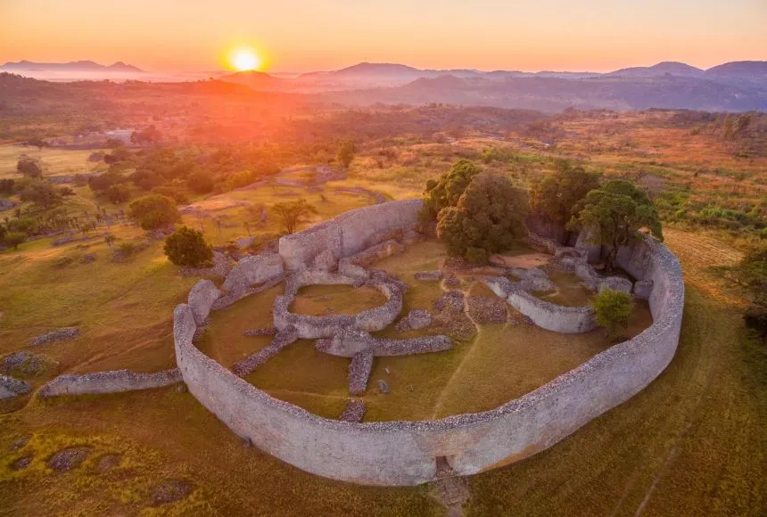
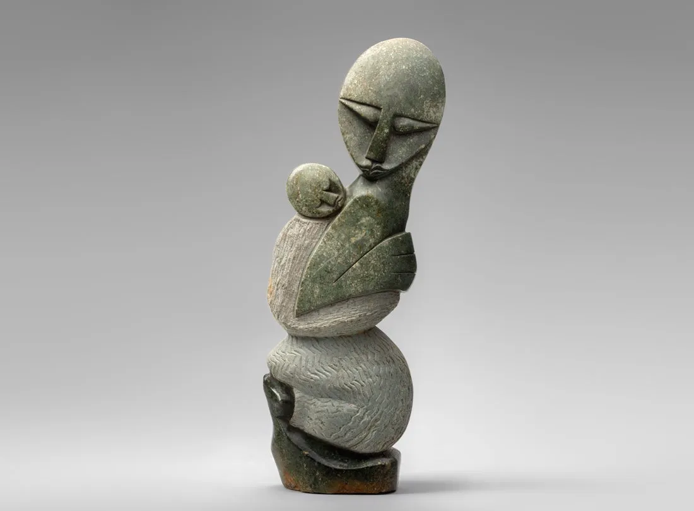

História do Zimbábue
Da antiga civilização do Grande Zimbábue à nação moderna, o país tem uma história fascinante que remonta a mais de mil anos.
O Zimbábue foi o local do império Monomotapa e do lendário Grande Zimbábue, um impressionante complexo de pedra construído entre os séculos XI e XV. Os britânicos colonizaram a área no século XIX, nomeando-a Rodésia.
Ruínas do Grande Zimbábue, Patrimônio Mundial da UNESCO
Você sabia?
O nome "Zimbábue" vem de "dzimba dza mabwe", que significa "grandes casas de pedra" na língua shona, referindo-se ao antigo reino.
O país conquistou a independência em 1980 após uma longa guerra de libertação, com Robert Mugabe como primeiro-ministro. Em 2017, após 37 anos no poder, Mugabe foi deposto em um golpe militar.
Marcos Históricos


Geografia do Zimbábue
Com paisagens variadas que incluem montanhas, planaltos e o majestoso rio Zambeze, o Zimbábue é um país de beleza natural impressionante.
O Zimbábue é um país sem litoral no sul da África, fazendo fronteira com África do Sul, Botsuana, Zâmbia e Moçambique. O país é predominantemente composto por planaltos, com uma altitude média de 1.200 metros.

Mapa mostrando a diversidade geográfica do Zimbábue
Destaque Geográfico
As Cataratas Vitória, compartilhadas com a Zâmbia, são duas vezes mais altas que as Cataratas do Niágara e uma das Sete Maravilhas Naturais do Mundo.
Principais características geográficas:
- Cataratas Vitória (Mosi-oa-Tunya - "A Fumaça que Trona")
- Rio Zambeze (quarto maior rio da África)
- Montes Inyangani (ponto mais alto com 2.592m)
- Lago Kariba (um dos maiores lagos artificiais do mundo)
- Pedras Equilibradas (formações graníticas icônicas)
Teste Seu Conhecimento
Qual é o significado de "Mosi-oa-Tunya", o nome local das Cataratas Vitória?
Economia do Zimbábue
Com vastos recursos naturais e um setor agrícola tradicionalmente forte, a economia do Zimbábue tem enfrentado desafios e oportunidades.
O Zimbábue possui uma das economias mais diversificadas da África Austral, com setores importantes na mineração, agricultura e turismo. O país tem grandes reservas de platina, diamantes e ouro, além de terras agrícolas férteis.

Campos de tabaco, um dos principais produtos de exportação
Dado Econômico
O Zimbábue já foi chamado de "Celeiro da África" por sua produção agrícola e ainda é um dos maiores exportadores de tabaco do continente.
Principais setores econômicos:
- Mineração (platina, diamantes, ouro, carvão)
- Agricultura (tabaco, algodão, milho)
- Turismo (Cataratas Vitória, safáris)
- Manufatura (têxteis, produtos químicos)
- Serviços financeiros
Interessado em oportunidades no Zimbábue?
Conheça os setores em crescimento e as oportunidades de investimento neste mercado em transformação.
SAIBA MAISFauna do Zimbábue
Com parques nacionais bem preservados, o Zimbábue oferece alguns dos melhores encontros com vida selvagem da África.
O Zimbábue é um dos melhores destinos africanos para safáris, com populações saudáveis de elefantes, leões, leopardos, rinocerontes e búfalos. O Parque Nacional Hwange tem uma das maiores concentrações de elefantes do continente.

Elefantes no Parque Nacional Hwange
Curiosidade Animal
O Zimbábue tem um dos programas de conservação de rinocerontes mais bem-sucedidos da África, com populações estáveis de rinocerontes negros e brancos.
Principais áreas de conservação:
- Parque Nacional Hwange (maior reserva do país)
- Parque Nacional Mana Pools (Patrimônio Mundial da UNESCO)
- Parque Nacional Matobo (proteção de rinocerontes)
- Área de Safari Gonarezhou (parte do Grande Limpopo Transfrontier Park)
Vida Selvagem


Flora do Zimbábue
Das florestas de mopane às savanas de acácias, o Zimbábue possui uma diversidade vegetal que sustenta seus ecossistemas únicos.
A vegetação do Zimbábue varia de florestas densas no leste a savanas arbustivas no oeste. O mopane é uma das árvores mais características, dominando grandes áreas do país e fornecendo alimento para elefantes e lagartas comestíveis.

Floresta de mopane, ecossistema característico
Símbolo Natural
A árvore flame (Spathodea campanulata), com suas flores vermelhas vibrantes, é uma das espécies mais icônicas do Zimbábue.
Principais biomas vegetais:
- Florestas de mopane (predominantes no sul e oeste)
- Savanas de miombo (centro e norte do país)
- Florestas montanhosas (Montes Inyangani)
- Vegetação ribeirinha (ao longo do Zambeze e outros rios)
- Pradarias (em áreas de conservação)
A flor nacional do Zimbábue é a Gloriosa (Gloriosa superba), uma trepadeira com flores vermelhas e amarelas que aparece nas notas do dólar zimbabuano.
Cultura do Zimbábue
Com uma herança que remonta ao Grande Zimbábue, a cultura zimbabuana é rica em tradições, música e arte.
A cultura do Zimbábue é predominantemente influenciada pelos povos Shona e Ndebele, os dois maiores grupos étnicos. A escultura em pedra-sabão é uma das expressões artísticas mais conhecidas internacionalmente.
Escultura em pedra-sabão, arte tradicional zimbabuana
Patrimônio Cultural
O mbira, instrumento musical tradicional feito de lâminas de metal presas a uma caixa de ressonância, é considerado patrimônio cultural e foi popularizado mundialmente por músicos como Thomas Mapfumo.
A culinária zimbabuana é baseada em:
- Sadza (mingau de farinha de milho, alimento básico)
- Nyama (carne, geralmente bovina ou de cabrito)
- Mopane worms (lagartas comestíveis do mopane)
- Maputi (pipoca tradicional)
Diversidade do Zimbábue
Com uma população de múltiplas etnias e credos, o Zimbábue é um país de grande diversidade cultural.
O Zimbábue tem cerca de 16 milhões de habitantes, sendo os Shona (80%) e Ndebele (15%) os maiores grupos étnicos. O país também tem pequenas comunidades de europeus, asiáticos e mestiços, principalmente nas áreas urbanas.

Vila tradicional mostrando o modo de vida rural
Curiosidade Cultural
O Zimbábue tem uma das taxas de alfabetização mais altas da África, estimada em mais de 90%, resultado de investimentos em educação após a independência.
Religiões no Zimbábue:
- Cristianismo (85%, maioria protestante)
- Religiões tradicionais africanas (10%)
- Islamismo e outras (5%)
O Zimbábue tem 16 línguas oficiais, refletindo sua diversidade étnica, com o inglês, shona e ndebele sendo as mais faladas.
Turismo no Zimbábue
Das espetaculares Cataratas Vitória aos safáris de classe mundial, o Zimbábue oferece experiências turísticas inesquecíveis.
O Zimbábue é um dos principais destinos turísticos da África Austral, conhecido por suas paisagens deslumbrantes, vida selvagem abundante e locais históricos fascinantes. As Cataratas Vitória são o principal atrativo, mas o país tem muito mais a oferecer.

Arco-íris nas Cataratas Vitória, um espetáculo natural
Destaque Turístico
O Parque Nacional Mana Pools, Patrimônio Mundial da UNESCO, oferece alguns dos melhores safáris a pé da África, com encontros próximos com elefantes e outros animais selvagens.
Principais atrações turísticas:
- Cataratas Vitória (uma das Sete Maravilhas Naturais)
- Parque Nacional Hwange (maior reserva do país)
- Parque Nacional Mana Pools (safáris a pé excepcionais)
- Grande Zimbábue (ruínas históricas impressionantes)
- Matobo Hills (paisagens de pedras equilibradas)
Pronto para explorar o Zimbábue?
Descubra pacotes de viagem exclusivos para conhecer as maravilhas deste país incrível.
VER OPÇÕES DE VIAGEM